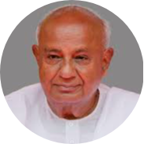

Sir H. D. Deve Gowda
1933 -
An Indian politician, former Prime Minister of India and presently is a Member of Parliament represe ting Karnataka.
Haradanahalli Doddegowda Deve gowda (born 18 May 1933) is an Indian Politician and Former Prime Minister of India from 1 June 1996 to 21 April 1997 .He was previously the 14th Cheif Minister of Karnataka from 1994 to 1996 .He presently is a Member of Parliament in the Rajya Sabha representing Karnataka.

The most well-known portrait of Deve Gowda.
The following list is a time line of H. D. Deve Gowda
- 1933-born in Holenarsipura,Distt. Hassan, Karnataka.
- 1950-Gowda earned a diploma in civil engineering from L. V. Polytechnic, Hassan, in the late 1950s.
- 1952-He was a member of Indian National Congress from 1952 to 1962
- 1953-Gowda joined the Indian National Congress party in 1953 and remained a member until 1962
- 1962-In 1962, Gowda was elected to the Karnataka Legislative Assembly from Holenarasipura constituency as an independent candidate. Later, he was elected from the same constituency to the Assembly for six consecutive terms from 1962 to 1989.
- 1972-He joined the Congress (O) during the Congress split and served as the Leader of Opposition in the Assembly from March 1972 to March 1976 and again from November 1976 to December 1977.
- 1975-During the Emergency (1975–77), he was imprisoned in the Bangalore Central Jail
- 1976-During 1976, he was imprisoned under Maintenance of Internal Security Act (MISA)
- 1983-He served as a minister in the Janata Party Government in Karnataka headed by Ramakrishna Hegde from 1983 to 1988.
- 1994-He became President of the state unit of Janata Dal in 1994 and was the driving force behind the victory of the party in the 1994 State Assembly elections. He was elected from the Ramanagara sworn in as the 14th Chief Minister of Karnataka in December.
- 1995-In January 1995, Gowda toured Switzerland and attended the Forum of International Economists. His tour to Singapore brought in foreign investment to the State
- 1996-In the 1996 general elections, the Congress party headed by P. V. Narasimha Rao lost decisively but no other party won enough seats to form a government. Also in the same year, He took over as Prime Minister of India on 1 June 1996 and continued until 11 April 1997. He also took in charge of Ministries/Departments of Petroleum and Chemicals, Personnel, Public Grievances and Pensions, Atomic Energy, Home Affairs, Agriculture, Food Processing Industries, Urban Affairs and Employment and Non-Conventional Energy Sources
- 1999-In 1999, many leaders, including Madhu Dandawate, joined the Janata Dal (Secular) faction headed by Deve Gowda, who became the National president of this faction. Also in the same year He was defeated in the 1999 general elections but staged a comeback by winning the Kanakapura By-elections in 2002.
- 2004-He was Re-elected to 14th Lok Sabha (4th term)
- 2006-He was Re-elected to 14th Lok Sabha (4th term)
- 2009-He was Re-elected to 14th Lok Sabha (4th term)
- 2014-He was Re-elected to 14th Lok Sabha (4th term)
Read more about H. D. Deve Gowda on Wikipedia.